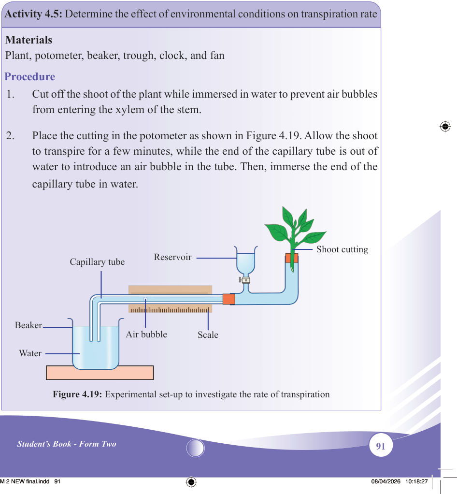
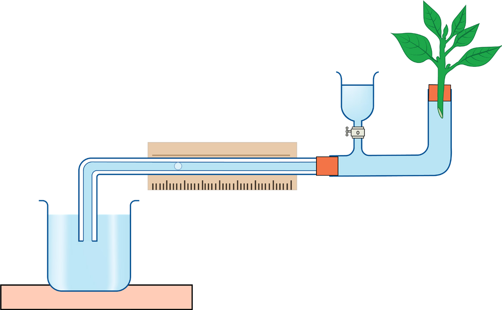

91
Student’s Book - Form Two

Biology for Secondary Schools
light intensity also increases the
plant’s internal temperature and hence increases the rate of
transpiration. Light also increases
the rate of water absorption and
leads to an increased turgidity of the two guard cells. The turgidity
of the guard cells brings about
the opening of the stomata, hence increasing the transpiration rate.
(vi) Atmospheric pressure: At high
altitudes, the atmospheric pressure
is low. This allows more rapid
diffusion of water. Plants at high
altitudes experience a high rate of
transpiration because of the low
atmospheric pressure.
Activity 4.5: Determine the effect of environmental conditions on transpiration rate
Materials
Plant, potometer, beaker, trough, clock, and fan
Procedure
1.
Cut off the shoot of the plant while immersed in water to prevent air bubbles
from entering the xylem of the stem.
2.
Place the cutting in the potometer as shown in Figure 4.19. Allow the shoot
to transpire for a few minutes, while the end of the capillary tube is out of water to introduce an air bubble in the tube. Then, immerse the end of the capillary tube in water.

Beaker
Water
Air bubble
Scale
Shoot cutting
Reservoir
Capillary tube
Figure 4.19: Experimental set-up to investigate the rate of transpiration
08/04/2026 10:18:27